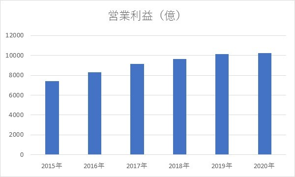
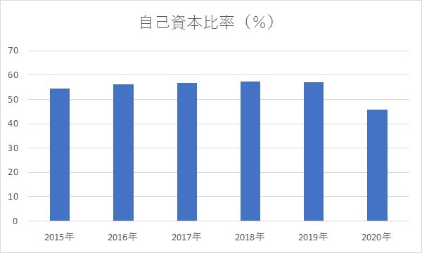
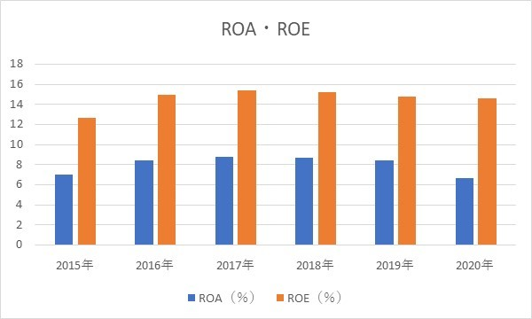
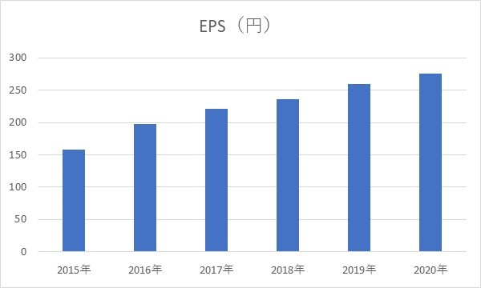

KDDI・配当、分析
2020/6/5
KDDIへの投資はなぜおすすめなのか？
長期保有目的での投資を考えている人におすすめです。
ぜひ、参考にしてください。
目次
- 1 KDDIとは
- 2 営業利益
- 3 自己資本比率
- 4 ROA・ROE
- 5 EPS
- 6 配当
- 7 PBR・PER
- 8 まとめ
KDDIとは？
KDDIはみんながわかりやすい呼び方だとauですね。知ってのとおり、モバイル・IoT/・ネットワークなど
通信事業を幅広く行っています。モバイル事業においては、docomoなどと最先端で競争しています。
常に価格やサービスで革新的なアイディアを出し、市場の拡大に貢献しているといえるでしょう。
そんなKDDIですが、投資家からは超人気です。なんせ、超有名超大手で高配当なので低リスクで確実に儲けられると 考えられているからでしょう。
営業利益
単位が大きいので、正確な数字だと...
- 2015年：7413億円
- 2016年：8326億円
- 2017年：9130億円
- 2018年：9628億円
- 2019年：10137億円
- 2020年：10252億円
業績は右肩上がりであることがわかりますね。やはり、今の時代は通信業界強いし、その中でもブランド力が あるので、長くトップ企業であり続けるのではないかと思いますね。
ちなみに時価総額は、日本企業で8位なのでKDDIに期待する人は多いということでしょう。（2020.6/5）（時価総額ランキング）
自己資本比率
グラフから、自己資本比率は50％前後であることがわかります。 40％を超えているので、財務状況に関しても非常に優良企業だといえます。
2020年に減少していますが、負債の増加によって総資産が大幅に増え、負債の割合が高くなったためです。
流動比率は100％ほどあるため、特に問題はありません。
ROA・ROE

ROA、ROEの目標値はそれぞれ5％、8％のため、会社の資産を上手く利益に反映できていることが言えます。
どの指標を見ても優秀ですね。
2020年において、ROEに比べてROAの下げ幅が大きいことも負債が増加したことが原因だとわかります。
EPS

EPSも右肩上がりですね。勢いよく企業が成長していることがわかります。
EPSを見るととても投資価値がある銘柄だと実感しますね。
なので、どんどんKDDIに投資していきましょう（笑）
配当
見てのとおり、配当金は年々増配傾向にあり、業績は右肩上がりなのでこれからも増配していく可能性は大きいです。
2015年と比べると、配当金は2倍になっているので、配当金も業績と同じように勢いよく上昇していることがわかります。
配当利回りも2020.6/4時点で3.73％と平均の2.16％より遥かに高いことがわかります。（日本取引所グループ） また、株主優待もあるので、利回りは相当高いです。（株主優待）
配当性向については、目安が30－40％といわれているので、目安通りに株主還元を行っているようです。
つまり、十分な株主還元に加え事業投資も十分に行えているといえます。
PBR・PER
- PBR：1.65
- PER：11.29
どちらも2020.6/4時点での指標となっていますが、目安はPBR：1、PER：15 とされているため、
PBRに関しては、問題はありません。
PERに関しては、目安よりも低いため割安だといえます。
今のところ、業績の割に株価が安いですが、人気株なのでどんどん上がっていくかもしれないため、早めに持っておくのがいいかもしれません。
まとめ
KDDIは、業績・財務状況のどちらも優秀で今後の成長にも期待できる企業といえます。 高配当以前にキャピタルゲインにも期待できますし、何より投資すればするだけ日本経済により還元してくれる企業なので、 どんどん投資していってほしいと思います。
特に、５Gが話題となっており、通信業界の発展には個人的にも期待しています。
結論としては、KDDI株は多方面から見て買っておきたい銘柄といえます。